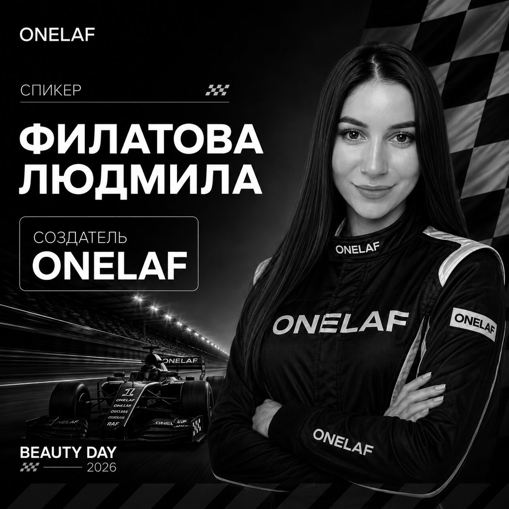

Думать о работе мастера
Материал оценивается не только по красивой баночке: важны нанесение, поведение в работе и понятные рекомендации.
За брендом — человек
Людмила Филатова основала ONELAF — бренд профессиональных материалов для маникюра. Здесь можно познакомиться с брендом и его ассортиментом.
Профиль Людмилы
О бренде
01Продукт
и мастер
В каталоге ONELAF есть материалы для разных этапов маникюра: от базы и моделирования до финишного покрытия.
Каждый продукт решает свою задачу. Например, Base Soft подходит для тонкого выравнивания, Gel Express — для моделирования, а Top Mirror завершает покрытие зеркальным блеском.
Характеристики, рекомендации по применению и актуальное наличие собраны в официальном магазине.
Материалы и их назначениеПринципы ONELAF
То, что помогает мастеру ориентироваться в ассортименте ONELAF.
Материал оценивается не только по красивой баночке: важны нанесение, поведение в работе и понятные рекомендации.
Состав и назначение материала стоит сверять с официальным описанием перед применением.
Для вопросов о продукте и подборе материала есть официальные каналы бренда.
Следующий шаг